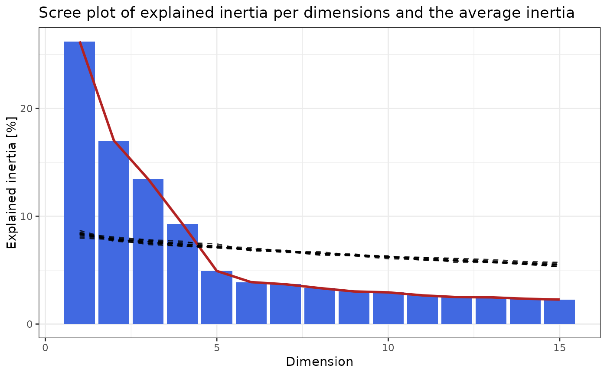

Runs elbow method
elbow_method.RdHelper function for pick_dims() to run the elbow method.
Arguments
- obj
A "cacomp" object as outputted from `cacomp()`
- mat
A numeric matrix. For sequencing a count matrix, gene expression values with genes in rows and samples/cells in columns. Should contain row and column names.
- reps
Integer. Number of permutations to perform when choosing "elbow_rule".
- python
A logical value indicating whether to use singular value decomposition from the python package torch. This implementation dramatically speeds up computation compared to `svd()` in R.
- return_plot
TRUE/FALSE. Whether a plot should be returned when choosing "elbow_rule".
Value
`elbow_method` (for `return_plot=TRUE`) returns a list with two elements: "dims" contains the number of dimensions and "plot" a ggplot. if `return_plot=TRUE` it just returns the number of picked dimensions.
References
Ciampi, Antonio, González Marcos, Ana and Castejón Limas, Manuel.
Correspondence analysis and 2-way clustering. (2005), SORT 29(1).
Examples
# Get example data from Seurat
library(SeuratObject)
set.seed(2358)
cnts <- as.matrix(SeuratObject::LayerData(pbmc_small,
assay = "RNA",
layer = "data"))
# Run correspondence analysis.
ca <- cacomp(obj = cnts)
#> Warning:
#> Parameter top is >nrow(obj) and therefore ignored.
#> No dimensions specified. Setting dimensions to: 15
# pick dimensions with the elbow rule. Returns list.
pd <- pick_dims(obj = ca,
mat = cnts,
method = "elbow_rule",
return_plot = TRUE,
reps = 10)
#>
|
| | 0%
|
|======= | 10%
|
|============== | 20%
|
|===================== | 30%
|
|============================ | 40%
|
|=================================== | 50%
|
|========================================== | 60%
|
|================================================= | 70%
|
|======================================================== | 80%
|
|=============================================================== | 90%
|
|======================================================================| 100%
pd$plot

ca_sub <- subset_dims(ca, dims = pd$dims)